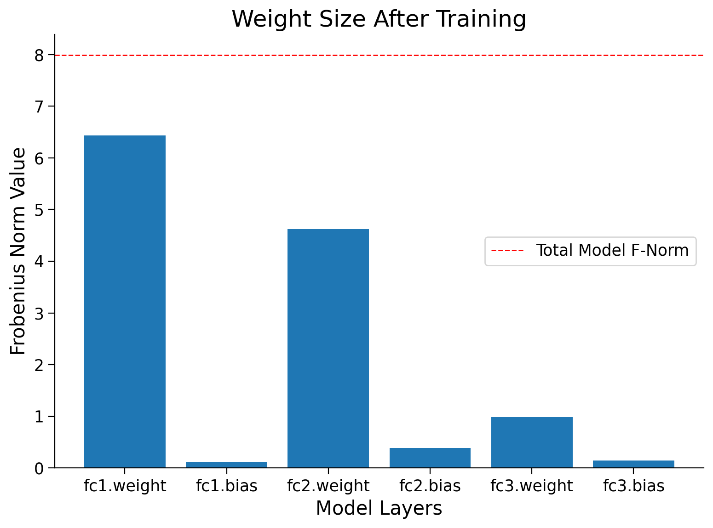
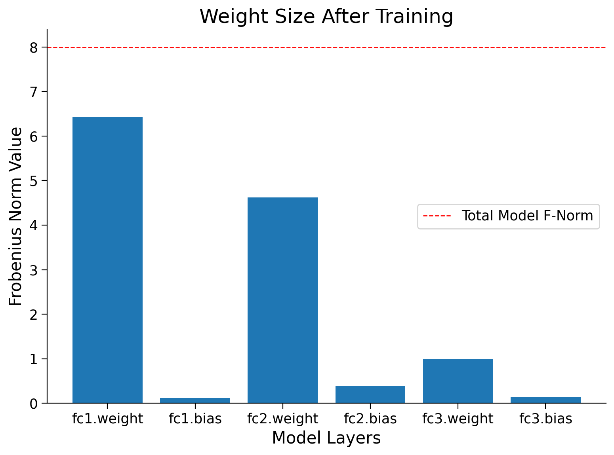

Tutorial 1: Regularization techniques part 1
Contents


Tutorial 1: Regularization techniques part 1¶
Week 2, Day 1: Regularization
By Neuromatch Academy
Content creators: Ravi Teja Konkimalla, Mohitrajhu Lingan Kumaraian, Kevin Machado Gamboa, Kelson Shilling-Scrivo, Lyle Ungar
Content reviewers: Piyush Chauhan, Siwei Bai, Kelson Shilling-Scrivo
Content editors: Roberto Guidotti, Spiros Chavlis
Production editors: Saeed Salehi, Gagana B, Spiros Chavlis
Tutorial Objectives¶
Big Artificial Neural Networks (ANNs) are efficient universal approximators due to their adaptive basis functions
ANNs memorize some but generalize well
Regularization as shrinkage of overparameterized models: early stopping
Setup¶
Note that some of the code for today can take up to an hour to run. We have therefore “hidden” the code and shown the resulting outputs.
Install dependencies¶
WARNING: There may be errors and/or warnings reported during the installation. However, they should be ignored.
# @title Install dependencies
# @markdown **WARNING**: There may be *errors* and/or *warnings* reported during the installation. However, they should be ignored.
!pip install imageio --quiet
!pip install imageio-ffmpeg --quiet
Install and import feedback gadget¶
# @title Install and import feedback gadget
!pip3 install vibecheck datatops --quiet
from vibecheck import DatatopsContentReviewContainer
def content_review(notebook_section: str):
return DatatopsContentReviewContainer(
"", # No text prompt
notebook_section,
{
"url": "https://pmyvdlilci.execute-api.us-east-1.amazonaws.com/klab",
"name": "neuromatch_dl",
"user_key": "f379rz8y",
},
).render()
feedback_prefix = "W2D1_T1"
# Imports
import time
import copy
import torch
import pathlib
import numpy as np
import torch.nn as nn
import torch.optim as optim
import torch.nn.functional as F
import matplotlib.pyplot as plt
import matplotlib.animation as animation
from tqdm.auto import tqdm
from IPython.display import HTML
from torchvision import transforms
from torchvision.datasets import ImageFolder
Figure Settings¶
# @title Figure Settings
import logging
logging.getLogger('matplotlib.font_manager').disabled = True
import ipywidgets as widgets
%matplotlib inline
%config InlineBackend.figure_format = 'retina'
plt.style.use("https://raw.githubusercontent.com/NeuromatchAcademy/content-creation/main/nma.mplstyle")
Loading Animal Faces data¶
# @title Loading Animal Faces data
import requests, os
from zipfile import ZipFile
print("Start downloading and unzipping `AnimalFaces` dataset...")
name = 'afhq'
fname = f"{name}.zip"
url = f"https://osf.io/kgfvj/download"
if not os.path.exists(fname):
r = requests.get(url, allow_redirects=True)
with open(fname, 'wb') as fh:
fh.write(r.content)
if os.path.exists(fname):
with ZipFile(fname, 'r') as zfile:
zfile.extractall(f".")
os.remove(fname)
print("Download completed.")
Start downloading and unzipping `AnimalFaces` dataset...
Download completed.
Loading Animal Faces Randomized data¶
# @title Loading Animal Faces Randomized data
print("Start downloading and unzipping `Randomized AnimalFaces` dataset...")
names = ['afhq_random_32x32', 'afhq_10_32x32']
urls = ["https://osf.io/9sj7p/download",
"https://osf.io/wvgkq/download"]
for i, name in enumerate(names):
url = urls[i]
fname = f"{name}.zip"
if not os.path.exists(fname):
r = requests.get(url, allow_redirects=True)
with open(fname, 'wb') as fh:
fh.write(r.content)
if os.path.exists(fname):
with ZipFile(fname, 'r') as zfile:
zfile.extractall(f".")
os.remove(fname)
print("Download completed.")
Start downloading and unzipping `Randomized AnimalFaces` dataset...
Download completed.
Plotting functions¶
# @title Plotting functions
def imshow(img):
"""
Display unnormalized image
Args:
img: np.ndarray
Datapoint to visualize
Returns:
Nothing
"""
img = img / 2 + 0.5 # Unnormalize
npimg = img.numpy()
plt.imshow(np.transpose(npimg, (1, 2, 0)))
plt.axis(False)
plt.show()
def plot_weights(norm, labels, ws,
title='Weight Size Measurement'):
"""
Plot of weight size measurement [norm value vs layer]
Args:
norm: float
Norm values
labels: list
Targets
ws: list
Weights
title: string
Title of plot
Returns:
Nothing
"""
plt.figure(figsize=[8, 6])
plt.title(title)
plt.ylabel('Frobenius Norm Value')
plt.xlabel('Model Layers')
plt.bar(labels, ws)
plt.axhline(y=norm,
linewidth=1,
color='r',
ls='--',
label='Total Model F-Norm')
plt.legend()
plt.show()
def early_stop_plot(train_acc_earlystop,
val_acc_earlystop, best_epoch):
"""
Plot of early stopping
Args:
train_acc_earlystop: np.ndarray
Training accuracy log until early stop point
val_acc_earlystop: np.ndarray
Val accuracy log until early stop point
best_epoch: int
Epoch at which early stopping occurs
Returns:
Nothing
"""
plt.figure(figsize=(8, 6))
plt.plot(val_acc_earlystop,label='Val - Early',c='red',ls = 'dashed')
plt.plot(train_acc_earlystop,label='Train - Early',c='red',ls = 'solid')
plt.axvline(x=best_epoch, c='green', ls='dashed',
label='Epoch for Max Val Accuracy')
plt.title('Early Stopping')
plt.ylabel('Accuracy (%)')
plt.xlabel('Epoch')
plt.legend()
plt.show()
Set random seed¶
Executing set_seed(seed=seed) you are setting the seed
# @title Set random seed
# @markdown Executing `set_seed(seed=seed)` you are setting the seed
# For DL its critical to set the random seed so that students can have a
# baseline to compare their results to expected results.
# Read more here: https://pytorch.org/docs/stable/notes/randomness.html
# Call `set_seed` function in the exercises to ensure reproducibility.
import random
import torch
def set_seed(seed=None, seed_torch=True):
"""
Function that controls randomness. NumPy and random modules must be imported.
Args:
seed : Integer
A non-negative integer that defines the random state. Default is `None`.
seed_torch : Boolean
If `True` sets the random seed for pytorch tensors, so pytorch module
must be imported. Default is `True`.
Returns:
Nothing.
"""
if seed is None:
seed = np.random.choice(2 ** 32)
random.seed(seed)
np.random.seed(seed)
if seed_torch:
torch.manual_seed(seed)
torch.cuda.manual_seed_all(seed)
torch.cuda.manual_seed(seed)
torch.backends.cudnn.benchmark = False
torch.backends.cudnn.deterministic = True
print(f'Random seed {seed} has been set.')
# In case that `DataLoader` is used
def seed_worker(worker_id):
"""
DataLoader will reseed workers following randomness in
multi-process data loading algorithm.
Args:
worker_id: integer
ID of subprocess to seed. 0 means that
the data will be loaded in the main process
Refer: https://pytorch.org/docs/stable/data.html#data-loading-randomness for more details
Returns:
Nothing
"""
worker_seed = torch.initial_seed() % 2**32
np.random.seed(worker_seed)
random.seed(worker_seed)
Set device (GPU or CPU). Execute set_device()¶
# @title Set device (GPU or CPU). Execute `set_device()`
# especially if torch modules used.
# Inform the user if the notebook uses GPU or CPU.
def set_device():
"""
Set the device. CUDA if available, CPU otherwise
Args:
None
Returns:
Nothing
"""
device = "cuda" if torch.cuda.is_available() else "cpu"
if device != "cuda":
print("WARNING: For this notebook to perform best, "
"if possible, in the menu under `Runtime` -> "
"`Change runtime type.` select `GPU` ")
else:
print("GPU is enabled in this notebook.")
return device
SEED = 2021
set_seed(seed=SEED)
DEVICE = set_device()
Random seed 2021 has been set.
WARNING: For this notebook to perform best, if possible, in the menu under `Runtime` -> `Change runtime type.` select `GPU`
Section 0: Defining useful functions¶
Let’s start the tutorial by defining some functions which we will use frequently today, such as: AnimalNet, train, test and main.
class AnimalNet(nn.Module):
"""
Network Class - Animal Faces
"""
def __init__(self):
"""
Initialize parameters of AnimalNet
Args:
None
Returns:
Nothing
"""
super(AnimalNet, self).__init__()
self.fc1 = nn.Linear(3 * 32 * 32, 128)
self.fc2 = nn.Linear(128, 32)
self.fc3 = nn.Linear(32, 3)
def forward(self, x):
"""
Forward Pass of AnimalNet
Args:
x: torch.tensor
Input features
Returns:
output: torch.tensor
Outputs/Predictions
"""
x = x.view(x.shape[0],-1)
x = F.relu(self.fc1(x))
x = F.relu(self.fc2(x))
x = self.fc3(x)
output = F.log_softmax(x, dim=1)
return output
The train function takes in the current model, along with the train_loader and loss function, and updates the parameters for a single pass of the entire dataset. The test function takes in the current model after every epoch and calculates the accuracy on the test dataset.
def train(args, model, train_loader, optimizer,
reg_function1=None, reg_function2=None, criterion=F.nll_loss):
"""
Trains the current input model using the data
from Train_loader and Updates parameters for a single pass
Args:
args: dictionary
Dictionary with epochs: 200, lr: 5e-3, momentum: 0.9, device: DEVICE
model: nn.module
Neural network instance
train_loader: torch.loader
Input dataset
optimizer: function
Optimizer
reg_function1: function
Regularisation function [default: None]
reg_function2: function
Regularisation function [default: None]
criterion: function
Specifies loss function [default: nll_loss]
Returns:
model: nn.module
Neural network instance post training
"""
device = args['device']
model.train()
for batch_idx, (data, target) in enumerate(train_loader):
data, target = data.to(device), target.to(device)
optimizer.zero_grad()
output = model(data)
if reg_function1 is None:
loss = criterion(output, target)
elif reg_function2 is None:
loss = criterion(output, target)+args['lambda']*reg_function1(model)
else:
loss = criterion(output, target) + args['lambda1']*reg_function1(model) + args['lambda2']*reg_function2(model)
loss.backward()
optimizer.step()
return model
def test(model, test_loader, criterion=F.nll_loss, device='cpu'):
"""
Tests the current model
Args:
model: nn.module
Neural network instance
device: string
GPU/CUDA if available, CPU otherwise
test_loader: torch.loader
Test dataset
criterion: function
Specifies loss function [default: nll_loss]
Returns:
test_loss: float
Test loss
"""
model.eval()
test_loss = 0
correct = 0
with torch.no_grad():
for data, target in test_loader:
data, target = data.to(device), target.to(device)
output = model(data)
test_loss += criterion(output, target, reduction='sum').item() # Sum up batch loss
pred = output.argmax(dim=1, keepdim=True) # Get the index of the max log-probability
correct += pred.eq(target.view_as(pred)).sum().item()
test_loss /= len(test_loader.dataset)
return 100. * correct / len(test_loader.dataset)
def main(args, model, train_loader, val_loader,
reg_function1=None, reg_function2=None):
"""
Trains the model with train_loader and
tests the learned model using val_loader
Args:
args: dictionary
Dictionary with epochs: 200, lr: 5e-3, momentum: 0.9, device: DEVICE
model: nn.module
Neural network instance
train_loader: torch.loader
Train dataset
val_loader: torch.loader
Validation set
reg_function1: function
Regularisation function [default: None]
reg_function2: function
Regularisation function [default: None]
Returns:
val_acc_list: list
Log of validation accuracy
train_acc_list: list
Log of training accuracy
param_norm_list: list
Log of frobenius norm
trained_model: nn.module
Trained model/model post training
"""
device = args['device']
model = model.to(device)
optimizer = optim.SGD(model.parameters(), lr=args['lr'],
momentum=args['momentum'])
val_acc_list, train_acc_list,param_norm_list = [], [], []
for epoch in tqdm(range(args['epochs'])):
trained_model = train(args, model, train_loader, optimizer,
reg_function1=reg_function1,
reg_function2=reg_function2)
train_acc = test(trained_model, train_loader, device=device)
val_acc = test(trained_model, val_loader, device=device)
param_norm = calculate_frobenius_norm(trained_model)
train_acc_list.append(train_acc)
val_acc_list.append(val_acc)
param_norm_list.append(param_norm)
return val_acc_list, train_acc_list, param_norm_list, trained_model
Section 1: Regularization is Shrinkage¶
Time estimate: ~20 mins
Video 1: Introduction to Regularization¶
Submit your feedback¶
# @title Submit your feedback
content_review(f"{feedback_prefix}_Introduction_to_Regularization_Video")
A key idea of neural nets is that they use models that are “too complex” - complex enough to fit all the noise in the data. One then needs to “regularize” them to make the models fit complex enough, but not too complex. The more complex the model, the better it fits the training data, but if it is too complex, it generalizes less well; it memorizes the training data but is less accurate on future test data.
Video 2: Regularization as Shrinkage¶
Submit your feedback¶
# @title Submit your feedback
content_review(f"{feedback_prefix}_Regularization_as_Shrinkage_Video")
One way to think about Regularization is to think in terms of the magnitude of the overall weights of the model. A model with big weights can fit more data perfectly, whereas a model with smaller weights tends to underperform on the train set but can surprisingly do very well on the test set. Having the weights too small can also be an issue as it can then underfit the model.
In these tutorials, we use the sum of the Frobenius norm of all the tensors in the model as a measure of the “size of the model”.
Coding Exercise 1: Frobenius Norm¶
Before we start, let’s define the Frobenius norm, sometimes also called the Euclidean norm of an \(m×n\) matrix \(A\) as the square root of the sum of the absolute squares of its elements.
This is just a measure of how big the matrix is, analogous to how big a vector is.
Hint: Use the functions model.parameters() or model.named_parameters()
def calculate_frobenius_norm(model):
"""
Function to calculate frobenius norm
Args:
model: nn.module
Neural network instance
Returns:
norm: float
Frobenius norm
"""
####################################################################
# Fill in all missing code below (...),
# then remove or comment the line below to test your function
raise NotImplementedError("Define `calculate_frobenius_norm` function")
####################################################################
norm = 0.0
# Sum the square of all parameters
for param in model.parameters():
norm += ...
# Take a square root of the sum of squares of all the parameters
norm = ...
return norm
# Seed added for reproducibility
set_seed(seed=SEED)
## uncomment below to test your code
# net = nn.Linear(10, 1)
# print(f'Frobenius norm of Single Linear Layer: {calculate_frobenius_norm(net)}')
Random seed 2021 has been set.
Random seed 2021 has been set.
Frobenius Norm of Single Linear Layer: 0.6572162508964539
Submit your feedback¶
# @title Submit your feedback
content_review(f"{feedback_prefix}_Forbenius_norm_Exercise")
Apart from calculating the weight size for an entire model, we could also determine the weight size in every layer. For this, we can modify our calculate_frobenius_norm function as shown below.
Have a look how it works!!
def calculate_frobenius_norm(model):
"""
Calculate Frobenius Norm per Layer
Args:
model: nn.module
Neural network instance
Returns:
norm: float
Norm value
labels: list
Targets
ws: list
Weights
"""
# Initialization of variables
norm, ws, labels = 0.0, [], []
# Sum all the parameters
for name, parameters in model.named_parameters():
p = torch.sum(parameters**2)
norm += p
ws.append((p**0.5).cpu().detach().numpy())
labels.append(name)
# Take a square root of the sum of squares of all the parameters
norm = (norm**0.5).cpu().detach().numpy()
return norm, ws, labels
set_seed(SEED)
net = nn.Linear(10,1)
norm, ws, labels = calculate_frobenius_norm(net)
print(f'Frobenius norm of Single Linear Layer: {norm:.4f}')
# Plots the weights
plot_weights(norm, labels, ws)
Random seed 2021 has been set.
Frobenius norm of Single Linear Layer: 0.6572
Using the last function, calculate_frobenius_norm, we can also obtain the Frobenius norm per layer for a whole ANN model and use the plot_weigts function to visualize them.
set_seed(seed=SEED)
# Creates a new model
model = AnimalNet()
# Calculates the forbenius norm per layer
norm, ws, labels = calculate_frobenius_norm(model)
print(f'Frobenius norm of Models weights: {norm:.4f}')
# Plots the weights
plot_weights(norm, labels, ws)
Random seed 2021 has been set.
Frobenius norm of Models weights: 7.3810
Section 2: Overfitting¶
Time estimate: ~15 mins
Video 3: Overparameterization and Overfitting¶
Submit your feedback¶
# @title Submit your feedback
content_review(f"{feedback_prefix}_Overparameterization_and_Overfitting_Video")
Section 2.1: Visualizing Overfitting¶
Let’s create some synthetic dataset that we will use to illustrate overfitting in neural networks.
set_seed(seed=SEED)
# Creating train data
# Input
X = torch.rand((10, 1))
# Output
Y = 2*X + 2*torch.empty((X.shape[0], 1)).normal_(mean=0, std=1) # Adding small error in the data
# Visualizing train data
plt.figure(figsize=(8, 6))
plt.scatter(X.numpy(),Y.numpy())
plt.xlabel('input (x)')
plt.ylabel('output(y)')
plt.title('toy dataset')
plt.show()
# Creating test dataset
X_test = torch.linspace(0, 1, 40)
X_test = X_test.reshape((40, 1, 1))
Random seed 2021 has been set.
Let’s create an overparametrized Neural Network that can fit on the dataset that we just created and train it.
First, let’s build the model architecture:
class Net(nn.Module):
"""
Network Class - 2D with following structure
nn.Linear(1, 300) + leaky_relu(self.fc1(x)) # First fully connected layer
nn.Linear(300, 500) + leaky_relu(self.fc2(x)) # Second fully connected layer
nn.Linear(500, 1) # Final fully connected layer
"""
def __init__(self):
"""
Initialize parameters of Net
Args:
None
Returns:
Nothing
"""
super(Net, self).__init__()
self.fc1 = nn.Linear(1, 300)
self.fc2 = nn.Linear(300, 500)
self.fc3 = nn.Linear(500, 1)
def forward(self, x):
"""
Forward pass of Net
Args:
x: torch.tensor
Input features
Returns:
x: torch.tensor
Output/Predictions
"""
x = F.leaky_relu(self.fc1(x))
x = F.leaky_relu(self.fc2(x))
output = self.fc3(x)
return output
Next, let’s define the different parameters for training our model:
set_seed(seed=SEED)
# Train the network on toy dataset
model = Net()
criterion = nn.MSELoss()
optimizer = optim.Adam(model.parameters(), lr=1e-4)
iters = 0
# Calculates frobenius before training
normi, wsi, label = calculate_frobenius_norm(model)
Random seed 2021 has been set.
At this point, we can now train our model.
set_seed(seed=SEED)
# Initializing variables
# Losses
train_loss = []
test_loss = []
# Model norm
model_norm = []
# Initializing variables to store weights
norm_per_layer = []
max_epochs = 10000
running_predictions = np.empty((40, int(max_epochs / 500 + 1)))
for epoch in tqdm(range(max_epochs)):
# Frobenius norm per epoch
norm, pl, layer_names = calculate_frobenius_norm(model)
# Training
model_norm.append(norm)
norm_per_layer.append(pl)
model.train()
optimizer.zero_grad()
predictions = model(X)
loss = criterion(predictions, Y)
loss.backward()
optimizer.step()
train_loss.append(loss.data)
model.eval()
Y_test = model(X_test)
loss = criterion(Y_test, 2*X_test)
test_loss.append(loss.data)
if (epoch % 500 == 0 or epoch == max_epochs - 1):
running_predictions[:, iters] = Y_test[:, 0, 0].detach().numpy()
iters += 1
Random seed 2021 has been set.
Now that we have finished training, let’s see how the model has evolved over the training process.
Animation (Run Me!)¶
# @title Animation (Run Me!)
set_seed(seed=SEED)
# Create a figure and axes
fig = plt.figure(figsize=(14, 5))
ax1 = plt.subplot(121)
ax2 = plt.subplot(122)
# Organizing subplots
plot1, = ax1.plot([],[])
plot2 = ax2.bar([], [])
def frame(i):
"""
Load animation frame
Args:
i: int
Epoch number
Returns:
plot1: function
Subplot of test-data vs running predictions
plot2: function
Subplot of test-data vs running predictions
"""
ax1.clear()
title1 = ax1.set_title('')
ax1.set_xlabel("Input(x)")
ax1.set_ylabel("Output(y)")
ax2.clear()
ax2.set_xlabel('Layer names')
ax2.set_ylabel('Frobenius norm')
title2 = ax2.set_title('Weight Measurement: Forbenius Norm')
ax1.scatter(X.numpy(),Y.numpy())
plot1 = ax1.plot(X_test[:,0,:].detach().numpy(),
running_predictions[:,i])
title1.set_text(f'Epochs: {i * 500}')
plot2 = ax2.bar(label, norm_per_layer[i*500])
plt.axhline(y=model_norm[i*500], linewidth=1,
color='r', ls='--',
label=f'Norm: {model_norm[i*500]:.2f}')
plt.legend()
return plot1, plot2
anim = animation.FuncAnimation(fig, frame, frames=range(20),
blit=False, repeat=False,
repeat_delay=10000)
html_anim = HTML(anim.to_html5_video())
plt.close()
import IPython
IPython.display.display(html_anim)
Random seed 2021 has been set.
---------------------------------------------------------------------------
RuntimeError Traceback (most recent call last)
Cell In[28], line 53
47 return plot1, plot2
50 anim = animation.FuncAnimation(fig, frame, frames=range(20),
51 blit=False, repeat=False,
52 repeat_delay=10000)
---> 53 html_anim = HTML(anim.to_html5_video())
54 plt.close()
56 import IPython
File ~/opt/anaconda3/envs/nma-course/lib/python3.9/site-packages/matplotlib/animation.py:1284, in Animation.to_html5_video(self, embed_limit)
1281 path = Path(tmpdir, "temp.m4v")
1282 # We create a writer manually so that we can get the
1283 # appropriate size for the tag
-> 1284 Writer = writers[mpl.rcParams['animation.writer']]
1285 writer = Writer(codec='h264',
1286 bitrate=mpl.rcParams['animation.bitrate'],
1287 fps=1000. / self._interval)
1288 self.save(str(path), writer=writer)
File ~/opt/anaconda3/envs/nma-course/lib/python3.9/site-packages/matplotlib/animation.py:148, in MovieWriterRegistry.__getitem__(self, name)
146 if self.is_available(name):
147 return self._registered[name]
--> 148 raise RuntimeError(f"Requested MovieWriter ({name}) not available")
RuntimeError: Requested MovieWriter (ffmpeg) not available
Plot the train and test losses¶
# @title Plot the train and test losses
plt.figure(figsize=(8, 6))
plt.plot(train_loss,label='train_loss')
plt.plot(test_loss,label='test_loss')
plt.ylabel('loss')
plt.xlabel('epochs')
plt.title('loss vs epoch')
plt.legend()
plt.show()
Think! 2.1: Interpreting losses¶
Regarding the train and test graph above, discuss among yourselves:
What trend do you see with respect to train and test losses (Where do you see the minimum of these losses?)
What does it tell us about the model we trained?
Submit your feedback¶
# @title Submit your feedback
content_review(f"{feedback_prefix}_Interpreting_losses_Discussion")
Now let’s visualize the Frobenious norm of the model as we trained. You should see that the value of weights increases over the epochs.
Frobenious norm of the model
# @markdown Frobenious norm of the model
plt.figure(figsize=(8, 6))
plt.plot(model_norm)
plt.ylabel('Norm of the model')
plt.xlabel('Epochs')
plt.title('Frobenious norm of the model')
plt.show()

Finally, you can compare the Frobenius norm per layer in the model, before and after training.
Frobenius norm per layer before and after training
# @markdown Frobenius norm per layer before and after training
normf, wsf, label = calculate_frobenius_norm(model)
plot_weights(float(normi), label, wsi,
title='Weight Size Before Training')
plot_weights(float(normf), label, wsf,
title='Weight Size After Training')
Section 2.2: Overfitting on Test Dataset¶
In principle, we should not touch our test set until choosing all our hyperparameters. Were we to use the test data in the model selection process, there is a risk that we might overfit the test data, and then we will be in serious trouble. If we overfit our training data, there is always an evaluation using the test data to keep us honest. But if we overfit the test data, how would we ever know?
Note that there is another kind of overfitting: you do “honest” fitting on one set of images or posts or medical records, but it may not generalize to other images, posts, or medical records.
Validation Dataset¶
A common practice to address this problem is to split our data in three ways, using a validation dataset (or validation set) to tune the hyperparameters. Ideally, we would only touch the test data once, to assess the very best model or to compare a small number of models to each other, real-world test data is seldom discarded after just one use.
Section 3: Memorization¶
Time estimate: ~20 mins
Given sufficiently large networks and enough training, Neural Networks can achieve almost 100% train accuracy by remembering each training example. However, this is bad because it will mean that the model will fail when presented with new data.
In this section, we train three MLPs; one each on:
Animal Faces Dataset
A Completely Noisy Dataset (Random shuffling of all labels)
A partially Noisy Dataset (Random shuffling of 15% labels)
Now, think for a couple of minutes as to what the train and test accuracies of each of these models might be, given that you train for sufficient time and use a powerful network.
First, let’s create the required dataloaders for all three datasets. Notice how we split the data. We train on a fraction of the dataset as it will be faster to train and will overfit more clearly.
# Dataloaders for the Dataset
batch_size = 128
classes = ('cat', 'dog', 'wild')
# Defining number of examples for train, val test
len_train, len_val, len_test = 100, 100, 14430
train_transform = transforms.Compose([
transforms.ToTensor(),
transforms.Normalize((0.5, 0.5, 0.5), (0.5, 0.5, 0.5))
])
data_path = pathlib.Path('.')/'afhq' # Using pathlib to be compatible with all OS's
img_dataset = ImageFolder(data_path/'train', transform=train_transform)
# Dataloaders for the Original Dataset
# For reproducibility
g_seed = torch.Generator()
g_seed.manual_seed(SEED)
img_train_data, img_val_data,_ = torch.utils.data.random_split(img_dataset,
[len_train,
len_val,
len_test])
# Creating train_loader and Val_loader
train_loader = torch.utils.data.DataLoader(img_train_data,
batch_size=batch_size,
num_workers=2,
worker_init_fn=seed_worker,
generator=g_seed)
val_loader = torch.utils.data.DataLoader(img_val_data,
batch_size=1000,
num_workers=2,
worker_init_fn=seed_worker,
generator=g_seed)
# Dataloaders for the Random Dataset
# For reproducibility
g_seed = torch.Generator()
g_seed.manual_seed(SEED + 1)
# Splitting randomized data into training and validation data
data_path = pathlib.Path('.')/'afhq_random_32x32/afhq_random' # Using pathlib to be compatible with all OS's
img_dataset = ImageFolder(data_path/'train', transform=train_transform)
random_img_train_data, random_img_val_data,_ = torch.utils.data.random_split(img_dataset, [len_train, len_val, len_test])
# Randomized train and validation dataloader
rand_train_loader = torch.utils.data.DataLoader(random_img_train_data,
batch_size=batch_size,
num_workers=2,
worker_init_fn=seed_worker,
generator=g_seed)
rand_val_loader = torch.utils.data.DataLoader(random_img_val_data,
batch_size=1000,
num_workers=2,
worker_init_fn=seed_worker,
generator=g_seed)
# Dataloaders for the Partially Random Dataset
# For reproducibility
g_seed = torch.Generator()
g_seed.manual_seed(SEED + 1)
# Splitting data between training and validation dataset for partially randomized data
data_path = pathlib.Path('.')/'afhq_10_32x32/afhq_10' # Using pathlib to be compatible with all OS's
img_dataset = ImageFolder(data_path/'train', transform=train_transform)
partially_random_train_data, partially_random_val_data,_ = torch.utils.data.random_split(img_dataset, [len_train, len_val, len_test])
# Training and Validation loader for partially randomized data
partial_rand_train_loader = torch.utils.data.DataLoader(partially_random_train_data,
batch_size=batch_size,
num_workers=2,
worker_init_fn=seed_worker,
generator=g_seed)
partial_rand_val_loader = torch.utils.data.DataLoader(partially_random_val_data,
batch_size=1000,
num_workers=2,
worker_init_fn=seed_worker,
generator=g_seed)
Now let’s define a model which has many parameters compared to the training dataset size, and train it on these datasets.
class BigAnimalNet(nn.Module):
"""
Network Class - Animal Faces with following structure:
nn.Linear(3*32*32, 124) + leaky_relu(self.fc1(x)) # First fully connected layer
nn.Linear(124, 64) + leaky_relu(self.fc2(x)) # Second fully connected layer
nn.Linear(64, 3) # Final fully connected layer
"""
def __init__(self):
"""
Initialize parameters for BigAnimalNet
Args:
None
Returns:
Nothing
"""
super(BigAnimalNet, self).__init__()
self.fc1 = nn.Linear(3*32*32, 124)
self.fc2 = nn.Linear(124, 64)
self.fc3 = nn.Linear(64, 3)
def forward(self, x):
"""
Forward pass of BigAnimalNet
Args:
x: torch.tensor
Input features
Returns:
x: torch.tensor
Output/Predictions
"""
x = x.view(x.shape[0], -1)
x = F.leaky_relu(self.fc1(x))
x = F.leaky_relu(self.fc2(x))
x = self.fc3(x)
output = F.log_softmax(x, dim=1)
return output
Before training our BigAnimalNet(), calculate the Frobenius norm again.
set_seed(seed=SEED)
normi, wsi, label = calculate_frobenius_norm(BigAnimalNet())
Random seed 2021 has been set.
Now, train our BigAnimalNet() model
# Here we have 100 true train data.
# Set the arguments
args = {
'epochs': 200,
'lr': 5e-3,
'momentum': 0.9,
'device': DEVICE
}
# Initialize the network
set_seed(seed=SEED)
model = BigAnimalNet()
start_time = time.time()
# Train the network
val_acc_pure, train_acc_pure, _, model = main(args=args,
model=model,
train_loader=train_loader,
val_loader=val_loader)
end_time = time.time()
print(f"Time to memorize the dataset: {end_time - start_time}")
# Train and Test accuracy plot
plt.figure(figsize=(8, 6))
plt.plot(val_acc_pure, label='Val Accuracy Pure', c='red', ls='dashed')
plt.plot(train_acc_pure, label='Train Accuracy Pure', c='red', ls='solid')
plt.axhline(y=max(val_acc_pure), c='green', ls='dashed',
label='max Val accuracy pure')
plt.title('Memorization')
plt.ylabel('Accuracy (%)')
plt.xlabel('Epoch')
plt.legend()
plt.show()
Random seed 2021 has been set.
---------------------------------------------------------------------------
RuntimeError Traceback (most recent call last)
File ~/opt/anaconda3/envs/nma-course/lib/python3.9/site-packages/torch/utils/data/dataloader.py:1132, in _MultiProcessingDataLoaderIter._try_get_data(self, timeout)
1131 try:
-> 1132 data = self._data_queue.get(timeout=timeout)
1133 return (True, data)
File ~/opt/anaconda3/envs/nma-course/lib/python3.9/multiprocessing/queues.py:113, in Queue.get(self, block, timeout)
112 timeout = deadline - time.monotonic()
--> 113 if not self._poll(timeout):
114 raise Empty
File ~/opt/anaconda3/envs/nma-course/lib/python3.9/multiprocessing/connection.py:257, in _ConnectionBase.poll(self, timeout)
256 self._check_readable()
--> 257 return self._poll(timeout)
File ~/opt/anaconda3/envs/nma-course/lib/python3.9/multiprocessing/connection.py:424, in Connection._poll(self, timeout)
423 def _poll(self, timeout):
--> 424 r = wait([self], timeout)
425 return bool(r)
File ~/opt/anaconda3/envs/nma-course/lib/python3.9/multiprocessing/connection.py:931, in wait(object_list, timeout)
930 while True:
--> 931 ready = selector.select(timeout)
932 if ready:
File ~/opt/anaconda3/envs/nma-course/lib/python3.9/selectors.py:416, in _PollLikeSelector.select(self, timeout)
415 try:
--> 416 fd_event_list = self._selector.poll(timeout)
417 except InterruptedError:
File ~/opt/anaconda3/envs/nma-course/lib/python3.9/site-packages/torch/utils/data/_utils/signal_handling.py:66, in _set_SIGCHLD_handler.<locals>.handler(signum, frame)
63 def handler(signum, frame):
64 # This following call uses `waitid` with WNOHANG from C side. Therefore,
65 # Python can still get and update the process status successfully.
---> 66 _error_if_any_worker_fails()
67 if previous_handler is not None:
RuntimeError: DataLoader worker (pid 76528) exited unexpectedly with exit code 1. Details are lost due to multiprocessing. Rerunning with num_workers=0 may give better error trace.
The above exception was the direct cause of the following exception:
RuntimeError Traceback (most recent call last)
Cell In[39], line 19
16 start_time = time.time()
18 # Train the network
---> 19 val_acc_pure, train_acc_pure, _, model = main(args=args,
20 model=model,
21 train_loader=train_loader,
22 val_loader=val_loader)
23 end_time = time.time()
25 print(f"Time to memorize the dataset: {end_time - start_time}")
Cell In[13], line 117, in main(args, model, train_loader, val_loader, reg_function1, reg_function2)
115 val_acc_list, train_acc_list,param_norm_list = [], [], []
116 for epoch in tqdm(range(args['epochs'])):
--> 117 trained_model = train(args, model, train_loader, optimizer,
118 reg_function1=reg_function1,
119 reg_function2=reg_function2)
120 train_acc = test(trained_model, train_loader, device=device)
121 val_acc = test(trained_model, val_loader, device=device)
Cell In[13], line 29, in train(args, model, train_loader, optimizer, reg_function1, reg_function2, criterion)
27 device = args['device']
28 model.train()
---> 29 for batch_idx, (data, target) in enumerate(train_loader):
30 data, target = data.to(device), target.to(device)
31 optimizer.zero_grad()
File ~/opt/anaconda3/envs/nma-course/lib/python3.9/site-packages/torch/utils/data/dataloader.py:633, in _BaseDataLoaderIter.__next__(self)
630 if self._sampler_iter is None:
631 # TODO(https://github.com/pytorch/pytorch/issues/76750)
632 self._reset() # type: ignore[call-arg]
--> 633 data = self._next_data()
634 self._num_yielded += 1
635 if self._dataset_kind == _DatasetKind.Iterable and \
636 self._IterableDataset_len_called is not None and \
637 self._num_yielded > self._IterableDataset_len_called:
File ~/opt/anaconda3/envs/nma-course/lib/python3.9/site-packages/torch/utils/data/dataloader.py:1328, in _MultiProcessingDataLoaderIter._next_data(self)
1325 return self._process_data(data)
1327 assert not self._shutdown and self._tasks_outstanding > 0
-> 1328 idx, data = self._get_data()
1329 self._tasks_outstanding -= 1
1330 if self._dataset_kind == _DatasetKind.Iterable:
1331 # Check for _IterableDatasetStopIteration
File ~/opt/anaconda3/envs/nma-course/lib/python3.9/site-packages/torch/utils/data/dataloader.py:1294, in _MultiProcessingDataLoaderIter._get_data(self)
1290 # In this case, `self._data_queue` is a `queue.Queue`,. But we don't
1291 # need to call `.task_done()` because we don't use `.join()`.
1292 else:
1293 while True:
-> 1294 success, data = self._try_get_data()
1295 if success:
1296 return data
File ~/opt/anaconda3/envs/nma-course/lib/python3.9/site-packages/torch/utils/data/dataloader.py:1145, in _MultiProcessingDataLoaderIter._try_get_data(self, timeout)
1143 if len(failed_workers) > 0:
1144 pids_str = ', '.join(str(w.pid) for w in failed_workers)
-> 1145 raise RuntimeError('DataLoader worker (pid(s) {}) exited unexpectedly'.format(pids_str)) from e
1146 if isinstance(e, queue.Empty):
1147 return (False, None)
RuntimeError: DataLoader worker (pid(s) 76528, 76529) exited unexpectedly
Frobenius norm for AnimalNet before and after training¶
# @markdown #### Frobenius norm for AnimalNet before and after training
normf, wsf, label = calculate_frobenius_norm(model)
plot_weights(float(normi), label, wsi, title='Weight Size Before Training')
plot_weights(float(normf), label, wsf, title='Weight Size After Training')
 

Data Visualizer¶
Before we train the model on data with random labels, let’s visualize and verify for ourselves that the data is random. Here, we have:
classes = ("cat", "dog", "wild")
We use the .permute() method. plt.imshow() expects the input to be in NumPy format and in the format \((P_x, P_y, 3)\), where \(P_x\) and \(P_y\) are the number of pixels along \(x\) and \(y\) axis, respectively.
def visualize_data(dataloader):
"""
Helper function to visualize data
Args:
dataloader: torch.tensor
Dataloader to visualize
Returns:
Nothing
"""
for idx, (data, label) in enumerate(dataloader):
plt.figure(idx)
# Choose the datapoint you would like to visualize
index = 22
# Choose that datapoint using index and permute the dimensions
# and bring the pixel values between [0, 1]
data = data[index].permute(1, 2, 0) * \
torch.tensor([0.5, 0.5, 0.5]) + \
torch.tensor([0.5, 0.5, 0.5])
# Convert the torch tensor into numpy
data = data.numpy()
plt.imshow(data)
plt.axis(False)
image_class = classes[label[index].item()]
print(f'The image belongs to : {image_class}')
plt.show()
# Call the function
visualize_data(rand_train_loader)
---------------------------------------------------------------------------
RuntimeError Traceback (most recent call last)
File ~/opt/anaconda3/envs/nma-course/lib/python3.9/site-packages/torch/utils/data/dataloader.py:1132, in _MultiProcessingDataLoaderIter._try_get_data(self, timeout)
1131 try:
-> 1132 data = self._data_queue.get(timeout=timeout)
1133 return (True, data)
File ~/opt/anaconda3/envs/nma-course/lib/python3.9/multiprocessing/queues.py:113, in Queue.get(self, block, timeout)
112 timeout = deadline - time.monotonic()
--> 113 if not self._poll(timeout):
114 raise Empty
File ~/opt/anaconda3/envs/nma-course/lib/python3.9/multiprocessing/connection.py:257, in _ConnectionBase.poll(self, timeout)
256 self._check_readable()
--> 257 return self._poll(timeout)
File ~/opt/anaconda3/envs/nma-course/lib/python3.9/multiprocessing/connection.py:424, in Connection._poll(self, timeout)
423 def _poll(self, timeout):
--> 424 r = wait([self], timeout)
425 return bool(r)
File ~/opt/anaconda3/envs/nma-course/lib/python3.9/multiprocessing/connection.py:931, in wait(object_list, timeout)
930 while True:
--> 931 ready = selector.select(timeout)
932 if ready:
File ~/opt/anaconda3/envs/nma-course/lib/python3.9/selectors.py:416, in _PollLikeSelector.select(self, timeout)
415 try:
--> 416 fd_event_list = self._selector.poll(timeout)
417 except InterruptedError:
File ~/opt/anaconda3/envs/nma-course/lib/python3.9/site-packages/torch/utils/data/_utils/signal_handling.py:66, in _set_SIGCHLD_handler.<locals>.handler(signum, frame)
63 def handler(signum, frame):
64 # This following call uses `waitid` with WNOHANG from C side. Therefore,
65 # Python can still get and update the process status successfully.
---> 66 _error_if_any_worker_fails()
67 if previous_handler is not None:
RuntimeError: DataLoader worker (pid 76531) exited unexpectedly with exit code 1. Details are lost due to multiprocessing. Rerunning with num_workers=0 may give better error trace.
The above exception was the direct cause of the following exception:
RuntimeError Traceback (most recent call last)
Cell In[41], line 37
33 plt.show()
36 # Call the function
---> 37 visualize_data(rand_train_loader)
Cell In[41], line 13, in visualize_data(dataloader)
1 def visualize_data(dataloader):
2 """
3 Helper function to visualize data
4
(...)
10 Nothing
11 """
---> 13 for idx, (data, label) in enumerate(dataloader):
14 plt.figure(idx)
16 # Choose the datapoint you would like to visualize
File ~/opt/anaconda3/envs/nma-course/lib/python3.9/site-packages/torch/utils/data/dataloader.py:633, in _BaseDataLoaderIter.__next__(self)
630 if self._sampler_iter is None:
631 # TODO(https://github.com/pytorch/pytorch/issues/76750)
632 self._reset() # type: ignore[call-arg]
--> 633 data = self._next_data()
634 self._num_yielded += 1
635 if self._dataset_kind == _DatasetKind.Iterable and \
636 self._IterableDataset_len_called is not None and \
637 self._num_yielded > self._IterableDataset_len_called:
File ~/opt/anaconda3/envs/nma-course/lib/python3.9/site-packages/torch/utils/data/dataloader.py:1328, in _MultiProcessingDataLoaderIter._next_data(self)
1325 return self._process_data(data)
1327 assert not self._shutdown and self._tasks_outstanding > 0
-> 1328 idx, data = self._get_data()
1329 self._tasks_outstanding -= 1
1330 if self._dataset_kind == _DatasetKind.Iterable:
1331 # Check for _IterableDatasetStopIteration
File ~/opt/anaconda3/envs/nma-course/lib/python3.9/site-packages/torch/utils/data/dataloader.py:1294, in _MultiProcessingDataLoaderIter._get_data(self)
1290 # In this case, `self._data_queue` is a `queue.Queue`,. But we don't
1291 # need to call `.task_done()` because we don't use `.join()`.
1292 else:
1293 while True:
-> 1294 success, data = self._try_get_data()
1295 if success:
1296 return data
File ~/opt/anaconda3/envs/nma-course/lib/python3.9/site-packages/torch/utils/data/dataloader.py:1145, in _MultiProcessingDataLoaderIter._try_get_data(self, timeout)
1143 if len(failed_workers) > 0:
1144 pids_str = ', '.join(str(w.pid) for w in failed_workers)
-> 1145 raise RuntimeError('DataLoader worker (pid(s) {}) exited unexpectedly'.format(pids_str)) from e
1146 if isinstance(e, queue.Empty):
1147 return (False, None)
RuntimeError: DataLoader worker (pid(s) 76531, 76532) exited unexpectedly
Now let’s train the network on the shuffled data and see if it memorizes.
# Here we have 100 completely shuffled train data.
# Set the arguments
args = {
'epochs': 200,
'lr': 5e-3,
'momentum': 0.9,
'device': DEVICE
}
# Initialize the model
set_seed(seed=SEED)
model = BigAnimalNet()
# Train the model
val_acc_random, train_acc_random, _, model = main(args,
model,
rand_train_loader,
val_loader)
# Train and Test accuracy plot
plt.figure(figsize=(8, 6))
plt.plot(val_acc_pure,label='Val - Pure',c='red',ls = 'dashed')
plt.plot(train_acc_pure,label='Train - Pure',c='red',ls = 'solid')
plt.plot(val_acc_random,label='Val - Random',c='blue',ls = 'dashed')
plt.plot(train_acc_random,label='Train - Random',c='blue',ls = 'solid')
plt.title('Memorization')
plt.ylabel('Accuracy (%)')
plt.xlabel('Epoch')
plt.legend()
plt.show()
Random seed 2021 has been set.
---------------------------------------------------------------------------
RuntimeError Traceback (most recent call last)
File ~/opt/anaconda3/envs/nma-course/lib/python3.9/site-packages/torch/utils/data/dataloader.py:1132, in _MultiProcessingDataLoaderIter._try_get_data(self, timeout)
1131 try:
-> 1132 data = self._data_queue.get(timeout=timeout)
1133 return (True, data)
File ~/opt/anaconda3/envs/nma-course/lib/python3.9/multiprocessing/queues.py:113, in Queue.get(self, block, timeout)
112 timeout = deadline - time.monotonic()
--> 113 if not self._poll(timeout):
114 raise Empty
File ~/opt/anaconda3/envs/nma-course/lib/python3.9/multiprocessing/connection.py:257, in _ConnectionBase.poll(self, timeout)
256 self._check_readable()
--> 257 return self._poll(timeout)
File ~/opt/anaconda3/envs/nma-course/lib/python3.9/multiprocessing/connection.py:424, in Connection._poll(self, timeout)
423 def _poll(self, timeout):
--> 424 r = wait([self], timeout)
425 return bool(r)
File ~/opt/anaconda3/envs/nma-course/lib/python3.9/multiprocessing/connection.py:931, in wait(object_list, timeout)
930 while True:
--> 931 ready = selector.select(timeout)
932 if ready:
File ~/opt/anaconda3/envs/nma-course/lib/python3.9/selectors.py:416, in _PollLikeSelector.select(self, timeout)
415 try:
--> 416 fd_event_list = self._selector.poll(timeout)
417 except InterruptedError:
File ~/opt/anaconda3/envs/nma-course/lib/python3.9/site-packages/torch/utils/data/_utils/signal_handling.py:66, in _set_SIGCHLD_handler.<locals>.handler(signum, frame)
63 def handler(signum, frame):
64 # This following call uses `waitid` with WNOHANG from C side. Therefore,
65 # Python can still get and update the process status successfully.
---> 66 _error_if_any_worker_fails()
67 if previous_handler is not None:
RuntimeError: DataLoader worker (pid 76534) exited unexpectedly with exit code 1. Details are lost due to multiprocessing. Rerunning with num_workers=0 may give better error trace.
The above exception was the direct cause of the following exception:
RuntimeError Traceback (most recent call last)
Cell In[42], line 16
13 model = BigAnimalNet()
15 # Train the model
---> 16 val_acc_random, train_acc_random, _, model = main(args,
17 model,
18 rand_train_loader,
19 val_loader)
21 # Train and Test accuracy plot
22 plt.figure(figsize=(8, 6))
Cell In[13], line 117, in main(args, model, train_loader, val_loader, reg_function1, reg_function2)
115 val_acc_list, train_acc_list,param_norm_list = [], [], []
116 for epoch in tqdm(range(args['epochs'])):
--> 117 trained_model = train(args, model, train_loader, optimizer,
118 reg_function1=reg_function1,
119 reg_function2=reg_function2)
120 train_acc = test(trained_model, train_loader, device=device)
121 val_acc = test(trained_model, val_loader, device=device)
Cell In[13], line 29, in train(args, model, train_loader, optimizer, reg_function1, reg_function2, criterion)
27 device = args['device']
28 model.train()
---> 29 for batch_idx, (data, target) in enumerate(train_loader):
30 data, target = data.to(device), target.to(device)
31 optimizer.zero_grad()
File ~/opt/anaconda3/envs/nma-course/lib/python3.9/site-packages/torch/utils/data/dataloader.py:633, in _BaseDataLoaderIter.__next__(self)
630 if self._sampler_iter is None:
631 # TODO(https://github.com/pytorch/pytorch/issues/76750)
632 self._reset() # type: ignore[call-arg]
--> 633 data = self._next_data()
634 self._num_yielded += 1
635 if self._dataset_kind == _DatasetKind.Iterable and \
636 self._IterableDataset_len_called is not None and \
637 self._num_yielded > self._IterableDataset_len_called:
File ~/opt/anaconda3/envs/nma-course/lib/python3.9/site-packages/torch/utils/data/dataloader.py:1328, in _MultiProcessingDataLoaderIter._next_data(self)
1325 return self._process_data(data)
1327 assert not self._shutdown and self._tasks_outstanding > 0
-> 1328 idx, data = self._get_data()
1329 self._tasks_outstanding -= 1
1330 if self._dataset_kind == _DatasetKind.Iterable:
1331 # Check for _IterableDatasetStopIteration
File ~/opt/anaconda3/envs/nma-course/lib/python3.9/site-packages/torch/utils/data/dataloader.py:1294, in _MultiProcessingDataLoaderIter._get_data(self)
1290 # In this case, `self._data_queue` is a `queue.Queue`,. But we don't
1291 # need to call `.task_done()` because we don't use `.join()`.
1292 else:
1293 while True:
-> 1294 success, data = self._try_get_data()
1295 if success:
1296 return data
File ~/opt/anaconda3/envs/nma-course/lib/python3.9/site-packages/torch/utils/data/dataloader.py:1145, in _MultiProcessingDataLoaderIter._try_get_data(self, timeout)
1143 if len(failed_workers) > 0:
1144 pids_str = ', '.join(str(w.pid) for w in failed_workers)
-> 1145 raise RuntimeError('DataLoader worker (pid(s) {}) exited unexpectedly'.format(pids_str)) from e
1146 if isinstance(e, queue.Empty):
1147 return (False, None)
RuntimeError: DataLoader worker (pid(s) 76534, 76538) exited unexpectedly
Isn’t it surprising to see that the ANN was able to achieve 100% training accuracy on randomly shuffled labels? This is one of the reasons why training accuracy is not a good indicator of model performance.
Section 4: Early Stopping¶
Time estimate: ~20 mins
Video 4: Early Stopping¶
Submit your feedback¶
# @title Submit your feedback
content_review(f"{feedback_prefix}_Early_Stopping_Video")
Now that we have established that the validation accuracy reaches the peak well before the model overfits, we want to stop the training somehow early. You should have also observed from the above plots that the train/test loss on real data is not very smooth, and hence you might guess that the choice of the epoch can play a crucial role in the validation/test accuracy.
Early stopping stops training when the validation accuracies stop increasing.

Coding Exercise 4: Early Stopping¶
Reimplement the main function to include early stopping as described above. Then run the code below to validate your implementation.
def early_stopping_main(args, model, train_loader, val_loader):
"""
Function to simulate early stopping
Args:
args: dictionary
Dictionary with epochs: 200, lr: 5e-3, momentum: 0.9, device: DEVICE
model: nn.module
Neural network instance
train_loader: torch.loader
Train dataset
val_loader: torch.loader
Validation set
Returns:
val_acc_list: list
Val accuracy log until early stop point
train_acc_list: list
Training accuracy log until early stop point
best_model: nn.module
Model performing best with early stopping
best_epoch: int
Epoch at which early stopping occurs
"""
####################################################################
# Fill in all missing code below (...),
# then remove or comment the line below to test your function
raise NotImplementedError("Complete the early_stopping_main function")
####################################################################
device = args['device']
model = model.to(device)
optimizer = optim.SGD(model.parameters(),
lr=args['lr'],
momentum=args['momentum'])
best_acc = 0.0
best_epoch = 0
# Number of successive epochs that you want to wait before stopping training process
patience = 20
# Keeps track of number of epochs during which the val_acc was less than best_acc
wait = 0
val_acc_list, train_acc_list = [], []
for epoch in tqdm(range(args['epochs'])):
# Train the model
trained_model = ...
# Calculate training accuracy
train_acc = ...
# Calculate validation accuracy
val_acc = ...
if (val_acc > best_acc):
best_acc = val_acc
best_epoch = epoch
best_model = copy.deepcopy(trained_model)
wait = 0
else:
wait += 1
if (wait > patience):
print(f'Early stopped on epoch: {epoch}')
break
train_acc_list.append(train_acc)
val_acc_list.append(val_acc)
return val_acc_list, train_acc_list, best_model, best_epoch
# Set the arguments
args = {
'epochs': 200,
'lr': 5e-4,
'momentum': 0.99,
'device': DEVICE
}
# Initialize the model
set_seed(seed=SEED)
model = AnimalNet()
## Uncomment to test
# val_acc_earlystop, train_acc_earlystop, best_model, best_epoch = early_stopping_main(args, model, train_loader, val_loader)
# print(f'Maximum Validation Accuracy is reached at epoch: {best_epoch:2d}')
# early_stop_plot(train_acc_earlystop, val_acc_earlystop, best_epoch)
Random seed 2021 has been set.
Submit your feedback¶
# @title Submit your feedback
content_review(f"{feedback_prefix}_Early_Stopping_Exercise")
Summary¶
In this tutorial, you have been introduced to the regularization technique, described as shrinkage. We have learned about overfitting, one of the worst caveats in deep learning, and finally, we have learned a method of reducing overfitting in our models called early-stopping.
If you have time left, you can learn how a model behaves when is trained with randomized labels.
Bonus: Train with randomized labels¶
In this part, let’s train on a partially shuffled dataset where 15% of the labels are noisy.
# Here we have 15% partially shuffled train data.
# Set the arguments
args = {
'epochs': 200,
'lr': 5e-3,
'momentum': 0.9,
'device': DEVICE
}
# Intialize the model
set_seed(seed=SEED)
model = BigAnimalNet()
# Train the model
val_acc_shuffle, train_acc_shuffle, _, _, = main(args,
model,
partial_rand_train_loader,
val_loader)
# Train and test acc plot
plt.figure(figsize=(8, 6))
plt.plot(val_acc_shuffle, label='Val Accuracy shuffle', c='red', ls='dashed')
plt.plot(train_acc_shuffle, label='Train Accuracy shuffle', c='red', ls='solid')
plt.axhline(y=max(val_acc_shuffle), c='green', ls='dashed',
label='Max Val Accuracy shuffle')
plt.title('Memorization')
plt.ylabel('Accuracy (%)')
plt.xlabel('Epoch')
plt.legend()
plt.show()
Random seed 2021 has been set.
---------------------------------------------------------------------------
RuntimeError Traceback (most recent call last)
File ~/opt/anaconda3/envs/nma-course/lib/python3.9/site-packages/torch/utils/data/dataloader.py:1132, in _MultiProcessingDataLoaderIter._try_get_data(self, timeout)
1131 try:
-> 1132 data = self._data_queue.get(timeout=timeout)
1133 return (True, data)
File ~/opt/anaconda3/envs/nma-course/lib/python3.9/multiprocessing/queues.py:113, in Queue.get(self, block, timeout)
112 timeout = deadline - time.monotonic()
--> 113 if not self._poll(timeout):
114 raise Empty
File ~/opt/anaconda3/envs/nma-course/lib/python3.9/multiprocessing/connection.py:257, in _ConnectionBase.poll(self, timeout)
256 self._check_readable()
--> 257 return self._poll(timeout)
File ~/opt/anaconda3/envs/nma-course/lib/python3.9/multiprocessing/connection.py:424, in Connection._poll(self, timeout)
423 def _poll(self, timeout):
--> 424 r = wait([self], timeout)
425 return bool(r)
File ~/opt/anaconda3/envs/nma-course/lib/python3.9/multiprocessing/connection.py:931, in wait(object_list, timeout)
930 while True:
--> 931 ready = selector.select(timeout)
932 if ready:
File ~/opt/anaconda3/envs/nma-course/lib/python3.9/selectors.py:416, in _PollLikeSelector.select(self, timeout)
415 try:
--> 416 fd_event_list = self._selector.poll(timeout)
417 except InterruptedError:
File ~/opt/anaconda3/envs/nma-course/lib/python3.9/site-packages/torch/utils/data/_utils/signal_handling.py:66, in _set_SIGCHLD_handler.<locals>.handler(signum, frame)
63 def handler(signum, frame):
64 # This following call uses `waitid` with WNOHANG from C side. Therefore,
65 # Python can still get and update the process status successfully.
---> 66 _error_if_any_worker_fails()
67 if previous_handler is not None:
RuntimeError: DataLoader worker (pid 76539) exited unexpectedly with exit code 1. Details are lost due to multiprocessing. Rerunning with num_workers=0 may give better error trace.
The above exception was the direct cause of the following exception:
RuntimeError Traceback (most recent call last)
Cell In[48], line 16
13 model = BigAnimalNet()
15 # Train the model
---> 16 val_acc_shuffle, train_acc_shuffle, _, _, = main(args,
17 model,
18 partial_rand_train_loader,
19 val_loader)
21 # Train and test acc plot
22 plt.figure(figsize=(8, 6))
Cell In[13], line 117, in main(args, model, train_loader, val_loader, reg_function1, reg_function2)
115 val_acc_list, train_acc_list,param_norm_list = [], [], []
116 for epoch in tqdm(range(args['epochs'])):
--> 117 trained_model = train(args, model, train_loader, optimizer,
118 reg_function1=reg_function1,
119 reg_function2=reg_function2)
120 train_acc = test(trained_model, train_loader, device=device)
121 val_acc = test(trained_model, val_loader, device=device)
Cell In[13], line 29, in train(args, model, train_loader, optimizer, reg_function1, reg_function2, criterion)
27 device = args['device']
28 model.train()
---> 29 for batch_idx, (data, target) in enumerate(train_loader):
30 data, target = data.to(device), target.to(device)
31 optimizer.zero_grad()
File ~/opt/anaconda3/envs/nma-course/lib/python3.9/site-packages/torch/utils/data/dataloader.py:633, in _BaseDataLoaderIter.__next__(self)
630 if self._sampler_iter is None:
631 # TODO(https://github.com/pytorch/pytorch/issues/76750)
632 self._reset() # type: ignore[call-arg]
--> 633 data = self._next_data()
634 self._num_yielded += 1
635 if self._dataset_kind == _DatasetKind.Iterable and \
636 self._IterableDataset_len_called is not None and \
637 self._num_yielded > self._IterableDataset_len_called:
File ~/opt/anaconda3/envs/nma-course/lib/python3.9/site-packages/torch/utils/data/dataloader.py:1328, in _MultiProcessingDataLoaderIter._next_data(self)
1325 return self._process_data(data)
1327 assert not self._shutdown and self._tasks_outstanding > 0
-> 1328 idx, data = self._get_data()
1329 self._tasks_outstanding -= 1
1330 if self._dataset_kind == _DatasetKind.Iterable:
1331 # Check for _IterableDatasetStopIteration
File ~/opt/anaconda3/envs/nma-course/lib/python3.9/site-packages/torch/utils/data/dataloader.py:1294, in _MultiProcessingDataLoaderIter._get_data(self)
1290 # In this case, `self._data_queue` is a `queue.Queue`,. But we don't
1291 # need to call `.task_done()` because we don't use `.join()`.
1292 else:
1293 while True:
-> 1294 success, data = self._try_get_data()
1295 if success:
1296 return data
File ~/opt/anaconda3/envs/nma-course/lib/python3.9/site-packages/torch/utils/data/dataloader.py:1145, in _MultiProcessingDataLoaderIter._try_get_data(self, timeout)
1143 if len(failed_workers) > 0:
1144 pids_str = ', '.join(str(w.pid) for w in failed_workers)
-> 1145 raise RuntimeError('DataLoader worker (pid(s) {}) exited unexpectedly'.format(pids_str)) from e
1146 if isinstance(e, queue.Empty):
1147 return (False, None)
RuntimeError: DataLoader worker (pid(s) 76539, 76541) exited unexpectedly
Plotting them all together (Run Me!)¶
#@markdown #### Plotting them all together (Run Me!)
plt.figure(figsize=(8, 6))
plt.plot(val_acc_pure,label='Val - Pure',c='red',ls = 'dashed')
plt.plot(train_acc_pure,label='Train - Pure',c='red',ls = 'solid')
plt.plot(val_acc_random,label='Val - Random',c='blue',ls = 'dashed')
plt.plot(train_acc_random,label='Train - Random',c='blue',ls = 'solid')
plt.plot(val_acc_shuffle, label='Val - shuffle', c='y', ls='dashed')
plt.plot(train_acc_shuffle, label='Train - shuffle', c='y', ls='solid')
plt.title('Memorization')
plt.ylabel('Accuracy (%)')
plt.xlabel('Epoch')
plt.legend()
plt.show()
---------------------------------------------------------------------------
NameError Traceback (most recent call last)
Cell In[49], line 3
1 #@markdown #### Plotting them all together (Run Me!)
2 plt.figure(figsize=(8, 6))
----> 3 plt.plot(val_acc_pure,label='Val - Pure',c='red',ls = 'dashed')
4 plt.plot(train_acc_pure,label='Train - Pure',c='red',ls = 'solid')
5 plt.plot(val_acc_random,label='Val - Random',c='blue',ls = 'dashed')
NameError: name 'val_acc_pure' is not defined
<Figure size 800x600 with 0 Axes>
Think! Bonus: Does it Generalize?¶
Given that the Neural Network fit/memorize the training data perfectly:
Do you think it generalizes well?
What makes you think it does or doesn’t?
Submit your feedback¶
# @title Submit your feedback
content_review(f"{feedback_prefix}_Early_Stopping_Generalization_Bonus_Discussion")
Also, it is interesting to note that sometimes the model trained on slightly shuffled data does slightly better than the one trained on pure data. Shuffling some of the data is a form of regularization, i.e., one of many ways of adding noise to the training data.